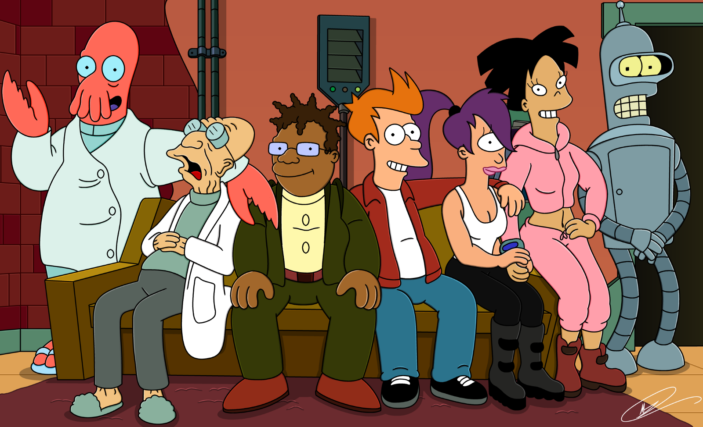
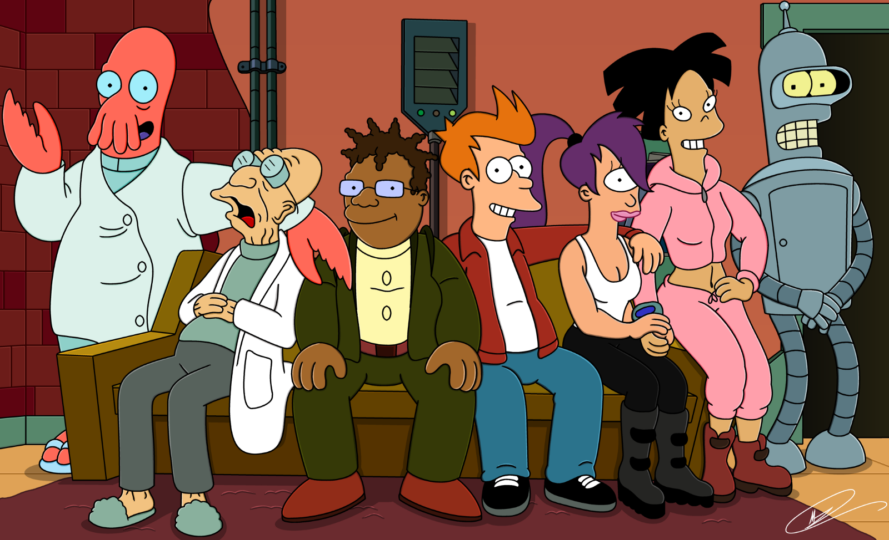

Anime Vs. Cartoon: What's the difference.

How does an anime differ from a cartoon? Many have asked this question and even more have answered with different answers. Some say there is no difference. Others say anime is from Japan and cartoons are from America. While these are valid answers, there is a better answer. Anime comes from the word animation. Anime is a Japanese word that can be translated to mean cartoons, but like many words, the meaning has changed over time. The question I’m asking and trying to answer is a complex question with a complex answer. Like many words, anime and cartoons have changed their meanings over time. Nowadays, these are umbrella terms covering a whole spectrum of different genres and styles. They are different from what they originally meant.


The word anime is a Japanese term to describe a Japanese cartoon. Unlike in America where animation is mainly targeted towards children, Japanese anime is targeted to all different ages. In keeping with the American view, when anime was first introduced to the USA and the western world, they were adopted and targeted towards children. Dubbing companies at the time did not understand the material they had and were just trying to fill a demand for cheap and affordable animation that networks could use in a Saturday morning animation block targeted towards children. Even though these anime were westernized, people still called them anime because they were from another country even though they resembled a cartoon. Some companies went so far as to change the story and animations. As anime has moved away from the Saturday morning block and into the online world and streaming, companies realized that they could now target these shows towards their intended audience. It saved them tons in dubbing since now all they need to do is dub the anime or add English subtitles without changing anything else. A streaming company wants all audiences coming to their site so just dubbing or subbing them gives them that larger audience. Now, the term anime can mean mature animation made for any older audiences.

Unlike anime, the word cartoon comes from the world of comics. Originally from the 19th century, it was used to describe gag and humorous illustrations in magazines and newspaper comic strips. As animation became more mainstream, gag and humorous animation became popular thanks to Disney and Looney Toons early animations. The word cartoon transitioned into a way to describe these types of animations. Slapstick and funny animations targeted towards children as they are more likely to enjoy this type of animation. Cartoon are generally not grounded reality. They off don’t try to recreate real people. A cartoon character will most likely be colored different and have out of portions body. A cartoon character can be just as relatable as a real life character, but people all over started to associate cartoons and animation in general as a lesser form of moving pictures only able to entertain the young. Many people nowadays still view this to be true. This has started to change as the children from the 80s and 90s become adults and their demand for more adult orientated animation has grown. Cartoons continue to evolve and more adult targeted cartoons are being made now days.
 

Anime and cartoons are different sides of the same spectrum. Anime is not only made in Japan anymore while cartoons are not only made in the USA. Cartoons and anime have started to incorporate different aspects of each other. There are many cross-cultural collaborations being made. Some larger companies even have studios in multiple countries. You can find a cartoon and anime made by both American, Japanese, and Canada studios. For example, OK KO opening was done by Trigger Studio. a Japanese Studio while RWBY is created by Rooster Teeth an America animation studio.
Coming back to the question and the answer, the meaning of the words cartoon and anime have changed since the world has changed. For the most part, cartoons are made with unrealistic designs in mind while anime is more grounded in reality, there are many shows that fall in between the spectrum. The great thing about being a fan is we get to see all these different styles of animation.